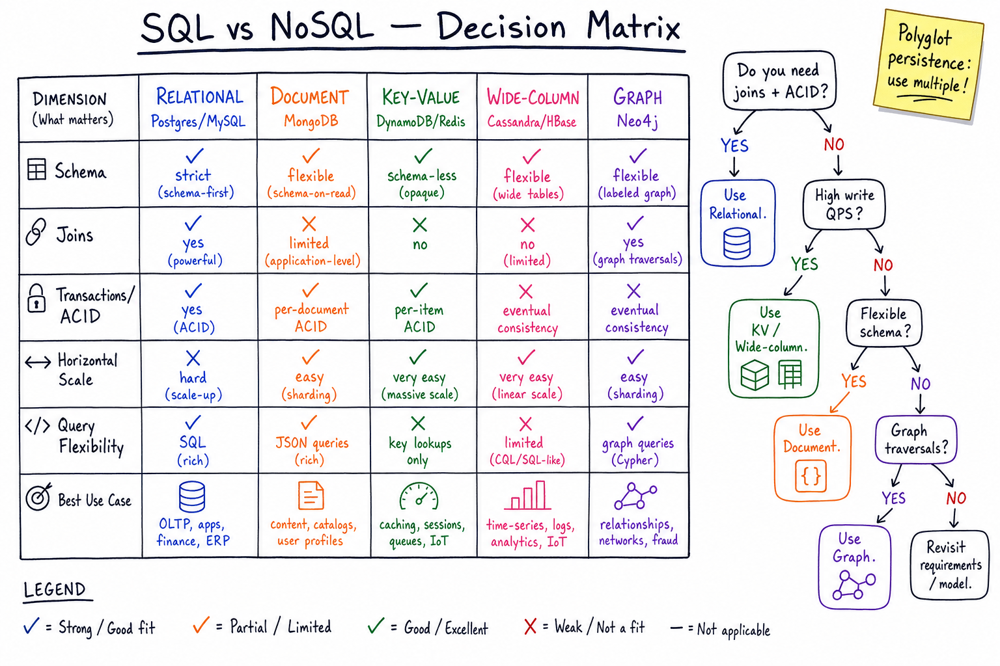

SQL vs NoSQL // Concept
Choosing a database family is the single highest-leverage HLD decision. Relational vs document vs KV vs wide-column vs graph — picking the wrong one ripples through every layer. This sheet maps the five families to the five questions you should actually be asking.

5-family comparison matrix on 6 dimensions (schema, joins, ACID, horizontal scale, query flexibility, best use case) + decision flowchart on the right.
01 — What Problem It Solves
"SQL vs NoSQL" is the wrong dichotomy. The real question is: which of the 5 storage shapes matches your access pattern, scale, and consistency needs?
5 families, each optimized for a different access pattern: RELATIONAL : joins + complex queries + ACID (Postgres, MySQL) DOCUMENT : self-contained JSON, flexible schema (MongoDB, Couchbase) KEY-VALUE : O(1) get/put by primary key, huge QPS (DynamoDB, Redis) WIDE-COLUMN : time-series / write-heavy, huge rows (Cassandra, HBase, ScyllaDB) GRAPH : traversal-heavy relationships (Neo4j, JanusGraph)
Picking wrong = pain. "We chose Mongo because we're big" + later need joins → reinvent SQL in app code.
01a — Core Vocabulary
| Term | Meaning |
|---|---|
| ACID | Atomicity, Consistency, Isolation, Durability. Strong transactional guarantees per node. |
| BASE | Basically Available, Soft state, Eventual consistency. The "give up some C for A+P" model. |
| Schema-on-write | DDL up front (Postgres). DB enforces shape; you fail at INSERT time. |
| Schema-on-read | No DDL (Mongo). App enforces shape; you fail at parse time. |
| Joins | Combining rows from N tables by foreign key. SQL excels; NoSQL avoids by denormalising. |
| Secondary index | Index on non-PK column. Cheap in SQL, expensive/limited in KV stores. |
| Vertical scaling | Bigger box. Easy for SQL but bounded. |
| Horizontal scaling | More boxes (sharding). Native to most NoSQL, retrofit on SQL. |
| Denormalisation | Store duplicates to avoid joins. The NoSQL data-modelling tax. |
| Eventual consistency | Replicas converge eventually; reads may be stale. See consistency models. |
02 — Approaches (Tradeoff Matrix)
| Family | Example | Best at | Bad at | Scale Axis |
|---|---|---|---|---|
| Relational | Postgres, MySQL | Joins, ACID txns, complex queries, reporting | Horizontal scale, flexible schema, billions of rows of a single hot table | Vertical + read replicas; sharding is retrofit |
| Document | MongoDB, Couchbase | Self-contained nested docs, flexible schema, content/catalogue | Cross-doc joins, multi-doc ACID (Mongo added it but slow), heavy reporting | Native sharding by shard key |
| Key-Value | DynamoDB, Redis, Riak | O(1) get/put, sessions, caches, leaderboards | Range queries on non-PK, ad-hoc analytics | Native horizontal — consistent hashing |
| Wide-column | Cassandra, HBase, ScyllaDB | Write-heavy, time-series, append-mostly, geo-distributed | Complex queries, joins, transactions | Native linear scale — token ring |
| Graph | Neo4j, JanusGraph | Multi-hop traversals (friend-of-friend, fraud rings, recommendations) | Bulk scans, aggregations, sheer write throughput | Hard to shard well |
03 — Diagram
See the main diagram above. The 6 dimensions on the y-axis (schema, joins, ACID, horizontal scale, query flexibility, best use case) are the questions you should answer before you pick a DB. The decision flowchart on the right is the 80% answer to "which DB?"
04 — When Relational Still Wins
- Transactional integrity — payments, ledgers, inventory. ACID across multiple rows is built-in; in NoSQL you'd build it.
- Complex ad-hoc queries — the product team will write 50 weird reports over 3 years. SQL handles them. Mongo aggregation pipelines do not, gracefully.
- Joins across 5 entities — orders + users + products + inventory + shipments. Denormalising five tables into one doc is suicide.
- Strong consistency by default — Postgres = Read Committed by default, easy to upgrade to Repeatable Read / Serializable.
- Mature ecosystem — ORMs, BI tools, backups, replication, monitoring — all polished.
- You don't have a scale problem — a single Postgres on a beefy box handles 10-50k TPS. That's most apps.
Rule of thumb: "Start with Postgres until you have a specific reason not to." Used by Stripe, Notion, Reddit, GitLab at massive scale.
05 — When NoSQL Wins
Key-Value (DynamoDB, Redis)
- Massive scale, single-table access by PK (sessions, user profile lookup, feature flag).
- Predictable single-digit-ms latency at any scale (DynamoDB's claim to fame).
- Caches, leaderboards, rate-limiter counters.
Document (MongoDB)
- Heterogeneous, evolving schema (CMS, product catalogue, user-generated content).
- The "aggregate" naturally fits one doc (an order with its line items).
Wide-column (Cassandra)
- Write-heavy — tens of millions of writes/sec. LSM-tree storage.
- Time-series, IoT, event logs, messaging history.
- Multi-region active-active with tunable consistency.
Graph (Neo4j)
- Multi-hop queries: friend-of-friend (LinkedIn), fraud rings, recommendation traversals, knowledge graphs.
- Same query in SQL = 5 self-joins; in Cypher = one line.
06 — NewSQL Bridges
NewSQL = "SQL semantics + horizontal scale + ACID." The "I want everything" tier.
| System | Approach | Used by |
|---|---|---|
| Google Spanner | TrueTime atomic clocks + Paxos. Globally distributed, externally consistent. | Google Ads, AdWords, Gmail metadata |
| CockroachDB | Spanner-inspired, software-only (hybrid logical clocks). Postgres wire-compatible. | DoorDash, Comcast, Netflix subsections |
| Vitess | MySQL sharding middleware. Routing layer that makes a sharded MySQL look single. | YouTube, Slack, Square, GitHub |
| YugabyteDB | Postgres-compatible, distributed storage layer based on DocDB. | Various enterprises |
| TiDB | MySQL-compatible, separates compute (TiDB) and storage (TiKV). | PingCAP customers, Pinterest analytics |
NewSQL pays a latency tax (cross-region Paxos round-trip). Use only if you genuinely need ACID + horizontal scale. Most apps don't.
07 — Polyglot Persistence
Production systems use multiple databases — one per access pattern. A real example (Uber-like):
USER PROFILES : Postgres (rich queries, joins, profile screen) TRIP LOCATIONS / GEO : DynamoDB / Redis (massive write QPS, GEOADD) TRIP HISTORY ARCHIVE : Cassandra (append-only, time-series, multi-region) SESSIONS / TOKENS : Redis (TTL, sub-ms reads) SEARCH : Elasticsearch (inverted index) RECOMMENDATIONS GRAPH : Neo4j or Postgres+ltree ANALYTICS / DWH : Snowflake / BigQuery / Redshift
The trade is operational complexity (more systems to run) vs design fit (each DB does what it's best at). Worth it past a certain scale.
08 — Common Mistakes
- "We need NoSQL because we're big." — Big = how many TPS? <10k TPS = Postgres. Past that, ask which access pattern is the bottleneck.
- Picking Mongo for transactional data. — Multi-document ACID was bolted on later and is slow. Use Postgres.
- Picking Cassandra without a query model. — Cassandra punishes ad-hoc queries. You must design the table per query. No retroactive indexes that scale.
- "NoSQL = no schema." — Wrong. The schema still exists; it just moved into your application code, untyped, undocumented.
- Joining in app code at scale. — If you find yourself doing N+1 lookups across services, you bought yourself the worst of both worlds.
- Using Redis as primary store. — Redis is a cache (or a queue, or a leaderboard). Persistence is best-effort. Use it as L2, not source of truth.
- Not provisioning DynamoDB capacity correctly. — Hot partition = throttle. Need to design the partition key, GSIs, and use on-demand mode if traffic is bursty.
N-2 — Where It Shows Up
- Payment system — classic relational (ACID, ledger, refunds).
- Key-value store — deep dive on the KV family.
- Uber — mixed: Postgres for profile, Cassandra for trips, Redis for geo.
- Twitter timeline — Postgres + Redis + Cassandra for fan-out.
- Notification system — KV for dedup, RDB for prefs.
- Postgres deep dive
- Cassandra & DynamoDB deep dive
- Sharding & Partitioning — how each family scales horizontally.
- Consistency models — the ACID-vs-eventual spectrum.
N-1 — Common Interview Probes
- "Why did you choose Postgres / DynamoDB / Cassandra here?" → access pattern, scale, consistency.
- "How would you shard this?" → pick a shard key with high cardinality and even distribution.
- "What if you need multi-region writes?" → Cassandra (LWW), DynamoDB Global Tables, Spanner.
- "How do secondary indexes work in DynamoDB / Cassandra?" → GSI is eventually consistent, separate partition; materialised view in Cassandra.
- "Why not just use Mongo for everything?" → you reinvent joins, you reinvent transactions, you reinvent reporting.
- "How do you migrate from one to the other?" → dual-write + backfill + cutover, with idempotency keys.
N — Interview Q&A
What's the actual decision rule between SQL and NoSQL?
Start with: do you need joins or multi-row ACID? If yes → Postgres. If no → check QPS. <10k QPS → still Postgres. >100k QPS or hot-key lookups by ID → KV. Time-series or write-heavy → Cassandra. Heterogeneous schema → Mongo. Don't pick on "we're going to be big".
What does "ACID" actually buy you vs BASE?
ACID = no lost updates, no torn reads, no orphaned state across rows even on crash. In BASE you'd handle each with idempotency keys, sagas, retries. Worth it for money & inventory. Not worth it for analytics or feeds.
Postgres can do JSON columns now. Why use Mongo at all?
Mostly: you don't, unless you need a sharding story without managing sharding yourself, or your team is already deep in JS/Mongoose. Postgres JSONB + GIN indexes covers most "document" use cases and gives you joins when you need them.
When would Cassandra beat DynamoDB?
(a) Multi-cloud / on-prem — DynamoDB locks you to AWS. (b) Want tunable consistency per query (QUORUM, ONE, ALL). (c) Cost at huge scale — DynamoDB gets expensive. (d) Bigger row sizes. Otherwise DynamoDB wins on ops — "no ops" vs Cassandra requires real expertise.
Sharding Postgres — how?
Application-level (Vitess for MySQL, Citus extension for Postgres), schema-based (one schema per tenant), or range-based (orders_2024, orders_2025). All push complexity into the app. Past ~10TB/100k TPS, consider NewSQL (CockroachDB) or move that table to a KV/wide-column store.
Why is "schemaless" a lie?
The schema always exists — the app code expects field names and types. "Schemaless" just means the DB doesn't enforce it, so bugs surface as runtime crashes far from where the bad write happened. Versioned migrations are still required; you just write them as data backfills.
How does NoSQL handle joins?
It doesn't. You denormalise (store the joined data redundantly) or you do the join in app code (N round-trips). Denormalisation creates a write-amplification + consistency problem you must own. Cassandra's "design your tables per query" mantra is exactly this.
What's CAP theorem's role in choosing?
CAP says under network partition, pick C or A. Postgres = CA-ish (no built-in partition tolerance, single-leader). Cassandra/DynamoDB = AP (tunable). Spanner pretends to be CP via TrueTime (but partitions still cost availability). See CAP & PACELC.
What's PACELC and why does it matter more than CAP?
PACELC: under Partition pick A or C, Else (normal ops) pick Latency or Consistency. The "Else" half is what you actually live with daily. Cassandra = AP/EL (low-latency eventual). Spanner = CP/EC (consistent but slower).
How do you migrate Postgres → DynamoDB?
Dual-write to both for N weeks. Backfill historical data. Read from DynamoDB, fall back to Postgres on miss + write-through. Diff metrics for divergence. Cut over reads. Stop writes to Postgres. Idempotency keys throughout because dual-write retries are guaranteed.
SDE-2 vs SDE-3 differentiator?
| SDE-2 | SDE-3 |
|---|---|
| Names 3 NoSQL types; "we use Mongo because scale" | Picks family per access pattern; calls out polyglot persistence; reasons about shard key choice, write-amplification, secondary index cost, multi-region semantics, NewSQL latency tax, migration plan with dual-write + idempotency. |
One sentence: when do you NOT pick Postgres?
When (a) a single table will exceed ~10 TB / 100k+ TPS on the hot path, or (b) you genuinely need active-active multi-region writes, or (c) your access is purely O(1) get/put and you need single-digit-ms p99 at any scale. Otherwise, Postgres.